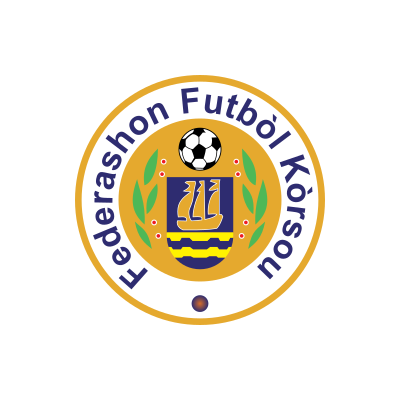
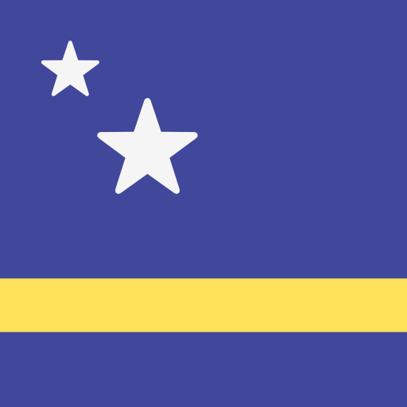
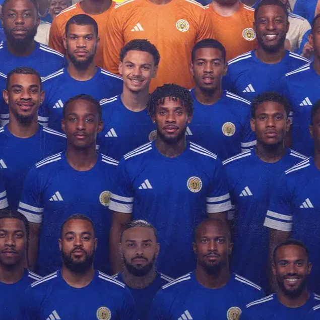
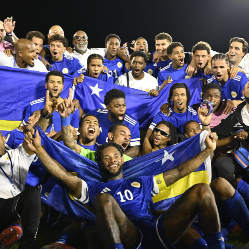

CuraçaoThe Curaçao national football team represents Curaçao in men's international football, it is controlled by the Federashon Futbòl Kòrsou.
-

Emblem
-

Nickname(s)
The Blue Wave
-
Association
Federashon Futbòl Kòrsou
FFK
-

Confederation
CONCACAF
North America
-

FIFA code
CUW
-

Appearances
1
first in 2026
-

Best result
2026
2026
-

Dick Advocaat
Head coach
(Netherlands)
-

Eloy Room
Goalkeeper
Born - February 6, 1989
Aged 37
Caps 70
Club - Miami FC (USA)
-

Trevor Doornbusch
Goalkeeper
Born - July 6, 1999
Aged 26
Caps 7
Club - VVV-Venlo (Netherlands)
-

Tyrick Bodak
Goalkeeper
Born - May 15, 2002
Aged 24
Caps 4
Club - Telstar (Netherlands)
-

Juriën Gaari
Defender
Born - December 23, 1993
Aged 32
Caps 58
Club - Abha (Saudi Arabia)
-

Roshon van Eijma
Defender
Born - June 9, 1998
Aged 28
Caps 27
Club - RKC Waalwijk (Netherlands)
-

Sherel Floranus
Defender
Born - August 23, 1998
Aged 27
Caps 26
Club - PEC Zwolle (Netherlands)
-

Joshua Brenet
Defender
Born - March 20, 1994
Aged 32
Caps 17
Club - Kayserispor (Turkey)
-

Shurandy Sambo
Defender
Born - August 19, 2001
Aged 24
Caps 7
Club - Sparta Rotterdam (Netherlands)
-

Armando Obispo
Defender
Born - March 5, 1999
Aged 27
Caps 4
Club - PSV Eindhoven (Netherlands)
-

Riechedly Bazoer
Defender
Born - October 12, 1996
Aged 29
Caps 3
Club - Konyaspor (Turkey)
-

Deveron Fonville
Defender
Born - May 16, 2003
Aged 23
Caps 0
Club - NEC (Netherlands)
-

Leandro Bacuna
Midfielder (Captain)
Born - August 21, 1991
Aged 34
Caps 70
Club - Iğdır (Turkey)
-

Juninho Bacuna
Midfielder
Born - August 7, 1997
Aged 28
Caps 47
Club - Volendam (Netherlands)
-

Godfried Roemeratoe
Midfielder
Born - August 19, 1999
Aged 26
Caps 26
Club - RKC Waalwijk (Netherlands)
-

Kevin Felida
Midfielder
Born - November 11, 1999
Aged 26
Caps 19
Club - Den Bosch (Netherlands)
-

Livano Comenencia
Midfielder
Born - February 3, 2004
Aged 22
Caps 18
Club - Zürich (Switzerland)
-

Ar'jany Martha
Midfielder
Born - September 4, 2003
Aged 22
Caps 8
Club - Rotherham United (England)
-

Tyrese Noslin
Midfielder
Born - September 11, 2002
Aged 23
Caps 5
Club - Telstar (Netherlands)
-

Kenji Gorré
Forward
Born - September 29, 1994
Aged 31
Caps 37
Club - Maccabi Haifa (Israel)
-

Brandley Kuwas
Forward
Born - September 19, 1992
Aged 33
Caps 34
Club - Volendam (Netherlands)
-

Gervane Kastaneer
Forward
Born - June 9, 1996
Aged 30
Caps 27
Club - Terengganu (Malaysia)
-

Jeremy Antonisse
Forward
Born - March 29, 2002
Aged 24
Caps 25
Club - Kifisia (Greece)
-

Jearl Margaritha
Forward
Born - April 10, 2000
Aged 26
Caps 21
Club - Beveren (Belgium)
-

Jürgen Locadia
Forward
Born - November 7, 1993
Aged 32
Caps 12
Club - Miami FC (USA)
-

Sontje Hansen
Forward
Born - May 18, 2002
Aged 24
Caps 5
Club - Middlesbrough (England)
-

Tahith Chong
Forward
Born - December 4, 1999
Aged 26
Caps 4
Club - Sheffield United (England)